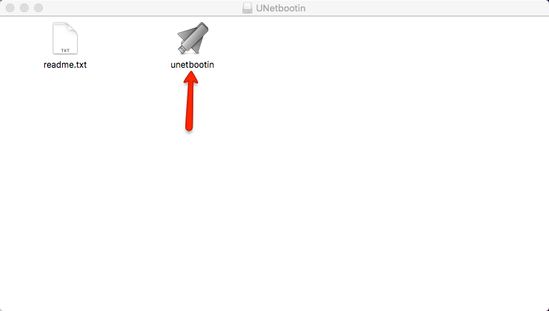
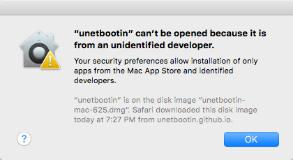
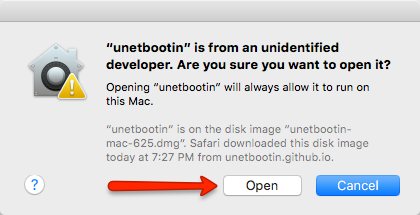
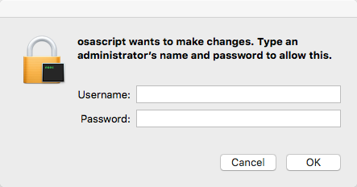
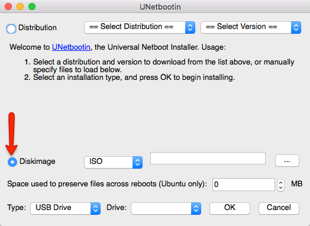
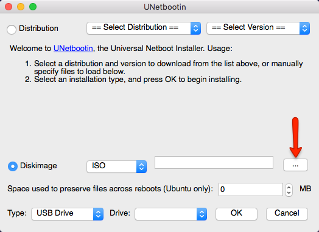
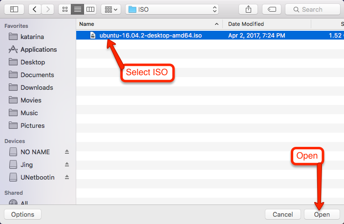
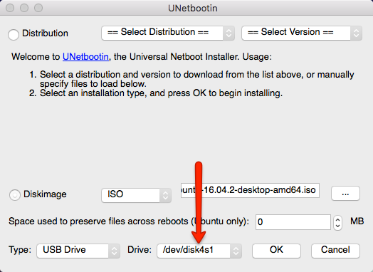
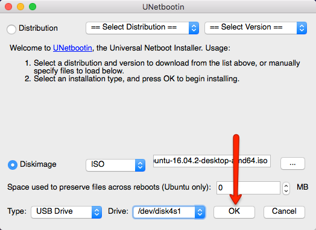
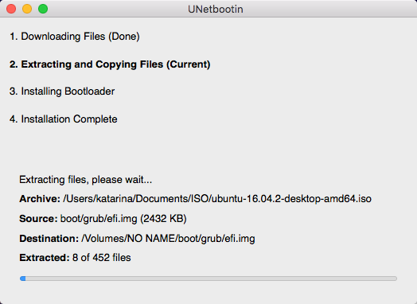

Completion: 0%
Open the downloaded file. It should be similar to the image below.
Double-Click on UNetbootin to open it.
You may run into an error here. If the error box below shows up, then press the Control key on your keyboard and right-click UNetbootin. When the menu comes up, click on Open.
Now another box should show up asking for permission to run UNetbootin. Click Open to confirm.
Enter your administrator credentials for permission.
When UNetbootin opens, select the Diskimage button, shown in the picture below.
Select the ... button to open the file chooser.
Navigate to the ISO file that you downloaded and select it.
Select your USB device from the dropdown shown in the image below.
Select Okay to start the process.
UNetbootin should do the rest for you. When it is finished, close UNetbootin.
